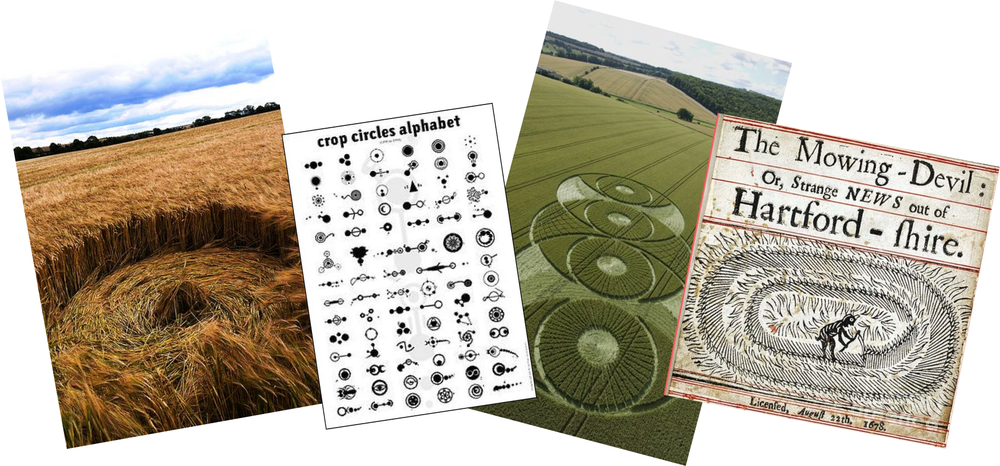

KORNCIRKLER
43%
Tror på at korncirkler er menneskeskabte. Det betyder altså også at 57% tror på de er skabt af aliens!
Tryk på knappen for at høre teorien om Marsmænd
Tror på at korncirkler er menneskeskabte. Det betyder altså også at 57% tror på de er skabt af aliens!
Tryk på knappen for at høre teorien om Marsmænd